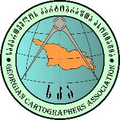
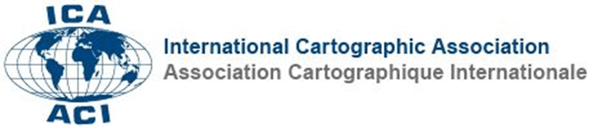

შემოგვიერთდით კარტოგრაფიის, გეოინფორმატიკისა და სივრცითი მონაცემების ანალიზის უახლესი ტენდენციების განსახილველად
Join us to explore the latest trends in cartography, geoinformatics, and spatial data analysis
სამდღიანი ღონისძიება კარტოგრაფიისა და GIS პროფესიონალებისთვის
A three-day event for cartography and GIS professionals
ივანე ჯავახიშვილის სახელობის თბილისის სახელმწიფო უნივერსიტეტი (თსუ) და საქართველოს კარტოგრაფთა ასოციაცია (სკა) იწყებს საერთაშორისო სამეცნიერო კონფერენციების სერიის ჩატარებას სახელწოდებით „კარტოგრაფია და თანამედროვეობა", რომელიც გაიმართება 4 წელიწადში ერთხელ საქართველოში.
რიგით პირველი კონფერენცია გაიმართება 2026 წლის 29–31 ოქტომბერს თბილისის სახელმწიფო უნივერსიტეტში. ღონისძიებამ უკვე მიიღო საერთაშორისო კარტოგრაფიული ასოციაციის ოფიციალური აღიარება.
ინტერდისციპლინარული ღონისძიების მიზანია კარტოგრაფიის, გეოინფორმაციული სისტემების და სივრცითი მონაცემების ანალიზის სფეროში მომუშავე სხვადასხვა ქვეყნის წარმომადგენლების მოზიდვა, რათა მოხდეს უახლესი მიღწევების შესახებ დაგროვილი ცოდნისა და გამოცდილების გაზიარება. ასევე მოხდეს კარტოგრაფიული ტექნოლოგიების, მეთოდებისა და ინოვაციების გაცვლა და შეიქმნას პლატფორმა ამ სფეროებში მომუშავე ორგანიზაციებისა თუ ინდივიდუალური სპეციალისტების ეფექტური თანამშრომლობისათვის.
პირველი კონფერენცია ეძღვნება გამოჩენილი ქართველი გეოგრაფისა და კარტოგრაფის, კარტოგრაფიის თეორიის ფუძემდებლის, საქართველოს მეცნიერებათა აკადემიის წევრ-კორესპოდენტის, გეოგრაფიულ მეცნიერებათა დოქტორის, პროფესორ ალექსანდრე ასლანიკაშვილის დაბადებიდან 110 წლის იუბილეს.
Ivane Javakhishvili Tbilisi State University (TSU) and the Georgian Cartographers Association (GCA) are launching a series of international scientific conferences entitled "Cartography and Modernity", to be held once every four years in Georgia.
The first conference will take place on 29–31 October 2026 at Tbilisi State University. The event has already received official recognition from the International Cartographic Association.
The aim of this interdisciplinary event is to bring together representatives from various countries working in the fields of cartography, geographic information systems and spatial data analysis, to share knowledge and experience on the latest advances, exchange cartographic technologies, methods and innovations, and to create a platform for effective collaboration among organisations and individual specialists in these fields.
The first conference is dedicated to the 110th anniversary of the birth of the outstanding Georgian geographer and cartographer, founder of cartographic theory, Corresponding Member of the Georgian Academy of Sciences, Doctor of Geographical Sciences, Professor Alexander Aslanikashvili.
ღონისძიების ორგანიზატორები
Event Organizers

საქართველოს კარტოგრაფთა ასოციაცია Georgian Cartographers Association
საერთაშორისო კარტოგრაფიული ასოციაცია (ICA) International Cartographic Association (ICA)დეტალური განრიგი გამოქვეყნდება მალე…
Detailed schedule will be published soon…
დეტალური განრიგი გამოქვეყნდება მალე…
Detailed schedule will be published soon…
დეტალური განრიგი გამოქვეყნდება მალე…
Detailed schedule will be published soon…
31 ოქტომბერი, 10:00 სთ.
October 31, 10:00
ექსკურსიის ზუსტი მარშრუტი გამოქვეყნდება მალე…
The exact tour route will be published soon…
მალე დაემატება დეტალები…
Details will be added soon…
თბილისის სახელმწიფო უნივერსიტეტი გეგმავს კონფერენციის მასალების კრებულის (ბეჭდური ფორმატი) გამოცემას, რომელიც განთავსდება Google Scholar-ის მონაცემთა ბაზაში (ელექტრონული ფორმატი).
Tbilisi State University plans to publish a proceedings volume (print format), which will be indexed in the Google Scholar database (electronic format).
თემების ეს ჩამონათვალი არ არის საბოლოო და ავტორებს შეუძლიათ წარმოადგინონ კარტოგრაფიასთან, გეოინფორმატიკასა და გეოსივრცულ მონაცემებთან დაკავშირებული სხვა თემებიც.
This list of topics is not final and authors are welcome to submit papers on other subjects related to cartography, geoinformatics and geospatial data.
რეგისტრაციისთვის შეავსეთ Google ფორმა
Please fill out the Google Form to register
📝 რეგისტრაციის ფორმა → 📝 Registration Form →კონფერენციაზე წარმოდგენილი ნაშრომები გამოქვეყნდება კონფერენციის კრებულში და ხელმისაწვდომი იქნება ციფრულ ფორმატში.
Papers presented at the conference will be published in the conference proceedings and available in digital format.
I. Chavchavadze Ave. 3, Tbilisi 0128
მეტრო "უნივერსიტეტი" - 5 წუთი
Metro "University" - 5 min walk
უფასო პარკინგი მონაწილეებისთვის
Free parking for participants
შეავსეთ Google ფორმა ვებგვერდზე. რეგისტრაცია უფასოა.
Fill out the Google Form on our website. Registration is free.
კონფერენცია წარმოებს ქართულ და ინგლისურ ენებზე.
The conference will be in Georgian and English.
კონფერენციაზე დასწრება უფასოა. რეგისტრაცია აუცილებელია.
Attendance is free. Registration is required.
დიახ, აბსტრაქტების მიღება დაიწყება 1 მაისიდან.
Yes, abstract submission opens on May 1st.
დიახ, ყავის შესვენებები და ლანჩი უზრუნველყოფილია.
Yes, coffee breaks and lunch will be provided.
საქართველოს კარტოგრაფთა ასოციაცია